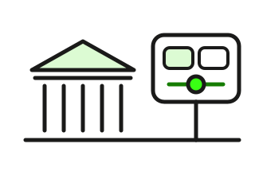

Handelsplätze verstehen
Wo Anleihen gehandelt werden, wer dir den Kurs stellt und welcher Platz sich für dich eignet. Drei Karten und eine Tabelle mit elf Handelsplätzen. Lesezeit: etwa 5 Minuten.

Zwei Welten: Profimarkt und Börse
Der Anleihenmarkt ist der größte Markt der Welt – und läuft zum größten Teil ohne Börse. Banken, Fonds und Versicherer handeln untereinander: per Telefon, Chat und auf Plattformen wie Bloomberg, Tradeweb oder MarketAxess. Allein europäische Staatsanleihen: 34 Billionen Euro im zweiten Halbjahr 2025, im Schnitt 6,3 Millionen Euro je Geschäft, die Hälfte davon ganz ohne Handelsplatz.
Dorthin kommst du nicht. Dein Weg ist die Börse: Dort stellt ein Handelsexperte laufend Kauf- und Verkaufskurse – auch für 1.000 Euro. Den Preis holt er sich aus dem Profimarkt und gibt ihn mit einer Spanne an dich weiter.
Wer mit wem handelt
- Bank ↔ Bank, Fonds, Versicherer
- Telefon, Chat, Plattform
- zur Hälfte ohne Handelsplatz
- du ↔ Handelsexperte
- Kurs laufend gestellt, 8 bis 22 Uhr
- Preis = Profipreis + Spanne
ICMA, Sekundärmarkt europäischer Staatsanleihen, 2. Halbjahr 2025.
Kurz gesagt: Profis handeln untereinander, du über die Börse. Dein Kurs ist der Profipreis plus Spanne.
Wer den Kurs stellt – und wann er gut ist
An jedem Platz sitzt ein Handelsexperte: in Frankfurt der Spezialist, in Stuttgart der Bondexperte, bei gettex, Tradegate und Quotrix ein Market Maker wie die Baader Bank. Er nennt einen Geldkurs (dazu kauft er) und einen Briefkurs (dazu verkauft er). Der Abstand ist die Geld-Brief-Spanne – bei Bundesanleihen ein paar Hundertstel, bei kleinen Unternehmensanleihen ein halber Punkt und mehr.
Zwei Regeln: Zwischen 9 und 17:30 Uhr, wenn der Profimarkt läuft, sind die Spannen am engsten – morgens und abends stellt er breiter, weil ihm die Referenz fehlt. Und ein Kurs ohne Umsatz ist nur eine Taxe: eine Einladung, kein Beweis, dass jemand dazu handelt.
Geld, Brief, Spanne – Beispiel
Spanne je 5.000 € Nennwert9 – 17:30 Uhr eng · sonst weiter
Angenommene Kurse. Geld = der Experte kauft, Brief = er verkauft; du kaufst zum Brief.
Kurz gesagt: Geld = er kauft, Brief = er verkauft. Die Spanne ist dein Preis – tagsüber eng, abends weit, ohne Umsatz nur eine Taxe.
Die Handelsplätze im Überblick
Elf Wege zur Anleihe. Bedeutung sagt, welches Gewicht der Platz im Anleihenhandel hat. Für dich ist unsere Einschätzung für Privatanleger – nach Auswahl, Spanne, Handelszeit und Börsenentgelt. Welche Plätze du siehst, entscheidet dein Broker.
| Handelsplatz | Anleihen | Handelszeit | Bedeutung | Für dich |
|---|---|---|---|---|
| Börse FrankfurtParkett der Deutschen Börse, Spezialisten stellen die Kurse. Die größte Auswahl in Deutschland – und die Quelle der Kurse auf dieser Website. | rund 27.700 | 8 – 17:30 Uhr | sehr groß | 5 von 5 |
| Börse StuttgartFührend bei Unternehmensanleihen. Die Bondexperten bündeln Liquidität aus dem Profimarkt und stellen bis in den Abend Kurse. | rund 17.800 | 7:30 – 22 Uhr | sehr groß | 5 von 5 |
| gettexElektronischer Platz der Börse München, Market Maker Baader Bank. Kein Börsenentgelt; bei einigen Brokern ganz ohne Gebühr. | rund 14.600 | 8 – 22 Uhr | groß | 4 von 5 |
| Tradegate BSXBerlin, seit 2026 mit der Börse Berlin verschmolzen. Europas größte Privatanleger-Börse bei Aktien; Anleihen sind Nebensache, Bundesanleihen aber eng. Kein Börsenentgelt. | keine Angabe | 7:30 – 22 Uhr | mittel | 3 von 5 |
| QuotrixMarket-Maker-Börse der Börse Düsseldorf (mit Hamburg und Hannover). Ohne Börsenentgelt, große Auswahl – aber wenig bekannt und nicht bei jedem Broker. | rund 16.000 | 7:30 – 22 Uhr | klein | 3 von 5 |
| Börse MünchenParkett mit Spezialisten, neben gettex. Solide Auswahl, ansonsten kein Grund, den Umweg zu gehen. | über 15.000 | 8 – 22 Uhr | klein | 3 von 5 |
| XetraElektronisches Orderbuch der Deutschen Börse. Bei Anleihen fast nur Bundeswertpapiere – dort dafür sehr eng. | wenige | 9 – 17:30 Uhr | klein | 2 von 5 |
| LS ExchangeBörse von Lang & Schwarz in Hamburg, Handelsplatz von Trade Republic. Lange Zeiten, kleine Auswahl – nur ein Teil der Anleihen ist überhaupt handelbar. | Auswahl | 7:30 – 23 Uhr | klein | 2 von 5 |
| DirekthandelAußerbörslich direkt mit einem Market Maker (Baader, Lang & Schwarz, Tradegate …). Kein Börsenentgelt, aber keine Börsenaufsicht über den Preis – Briefkurs mit der Börse vergleichen. | je Anbieter | meist 8 – 22 Uhr | mittel | 3 von 5 |
| Börsen im AuslandEuronext, Borsa Italiana, SIX, Wien. Für Sonderfälle – Zugang teuer, Abwicklung und Steuer aufwendiger. Luxemburg notiert Tausende Anleihen, gehandelt wird dort kaum. | – | – | für dich klein | 1 von 5 |
| ProfimarktAußerbörslich und auf Plattformen (Bloomberg, Tradeweb, MarketAxess): Banken, Fonds, Versicherer, Losgrößen in Millionen. Hier entstehen die Preise – für dich nicht zugänglich. | alle | – | sehr groß | kein Zugang |
Anzahl und Handelszeiten für Anleihen laut den Handelsplätzen, Stand September 2026 – Einzelheiten unten unter „Datenquellen und Methodik“. „Für dich“ ist unsere Einschätzung, keine Empfehlung: Was am Ende zählt, ist die Spanne für deine Anleihe an dem Tag.
So wählst du den Platz
Dein Broker bestimmt die Auswahl: Neobroker haben oft nur einen Platz, Direktbanken fast alle – welcher Broker welche hat, steht im Broker-Vergleich. Der beste Platz ist der mit der engsten Spanne für genau deine Anleihe, und das kann heute Frankfurt sein und morgen Stuttgart.
Drei Schritte: Erst prüfen, wo die Anleihe einen Kurs mit Umsatz hat – such sie in der Anleihen-Suche; ihr Steckbrief zeigt Platz, Datum und Umsatz. Dann den Briefkurs an zwei Plätzen vergleichen; der Unterschied ist oft größer als die Gebühr. Dann mit Limit kaufen, tagsüber zwischen 9 und 17:30 Uhr.
Drei Schritte vor der Order
- Kurs mit Umsatz?Ohne Umsatz ist der Kurs eine Taxe. Steckbrief: Platz, Datum, Umsatz.
- Briefkurs vergleichenZwei Plätze, gleiche Minute. 0,3 Punkte Unterschied = 15 € je 5.000 €.
- Limit, tagsüber9 bis 17:30 Uhr, Limit am Briefkurs oder knapp darunter.
Mehr zu Kosten je Kauf: Steuern und Handelskosten.
Kurz gesagt: Erst Umsatz, dann Briefkurs, dann Limit. Ein Platz ist so gut wie seine Spanne für deine Anleihe.
Diese Seite erklärt Handelsplätze. Sie ist keine Anlageberatung und keine Empfehlung für einen Anbieter. Kurse in den Schaubildern sind Beispiele.
Datenquellen und Methodik
Profimarkt. ICMA Secondary Market Practices Committee, European Secondary Market Data Report, 2. Halbjahr 2025 (Sovereign Edition, April 2026): 34,1 Billionen Euro Umsatz in europäischen Staatsanleihen (EU und Großbritannien), 50 % des Volumens außerbörslich (OTC), 31 % Händler-zu-Kunde- und 19 % Händler-zu-Händler-Plattformen; durchschnittliche Geschäftsgröße 2025: 6,3 Millionen Euro.
Anzahl und Handelszeiten gelten für Anleihen und stammen von den Handelsplätzen (Stand 28.09.2026): Börse Frankfurt rund 27.700 Anleihen, 8 – 17:30 Uhr (Deutsche Börse, Broschüre „So handeln Sie Anleihen“; Aktien und ETFs bis 22 Uhr). Börse Stuttgart rund 17.800 Anleihen (Börse Stuttgart, „Die Bondexperten“), 7:30 – 22 Uhr (Handelszeit seit 1. Juli 2025 laut Börse Stuttgart). gettex 8.500 Euro- und 6.100 Fremdwährungsanleihen, Börse München über 15.000, beide bis 22 Uhr seit 16.10.2023 (Pressemitteilung Bayerische Börse). Tradegate BSX: Verschmelzung von Tradegate Exchange und Börse Berlin zum 01.01.2026, 7:30 – 22 Uhr (Handelskalender), keine Transaktionsentgelte; eine Anleihen-Zahl nennt die Börse nicht. Quotrix rund 16.000 Anleihen, seit 01.07.2025 bis 22 Uhr (Presseinformation Börse Düsseldorf, 24.06.2025). LS Exchange / Lang & Schwarz 7:30 – 23 Uhr. Xetra-Anleihehandel 9 – 17:30 Uhr. Direkthandel: Zeiten je Market Maker.
Bewertung „Für dich“. Unsere Einschätzung nach vier Kriterien: Auswahl an Anleihen, übliche Spanne, Handelszeit und Börsenentgelt – je Platz gewichtet, keine Messung. Sie ersetzt nicht den Blick auf die Spanne der konkreten Anleihe. „Bedeutung“ ordnet das Gewicht im Anleihenhandel ein (Umsatz, Auswahl, Rolle als Preisquelle).
Kurse auf dieser Website. Börse Frankfurt (Nachhandelsdaten der Deutschen Börse, dazu Tradegate und Xetra), Bundeswertpapiere von der Bundesbank – siehe Anleihen-Suche.